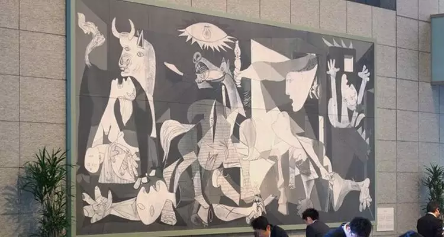

Desde o ano 1931, a Espanha era regida por uma República, denominada "II República" pois foi instaurada após um regime ditatorial. Teve como presidente eleito Niceto Alcála-Zamora que ficou no poder até 1936. Niceto foi sucedido por Manuel Azaña Díaz, que teve como primeiro-ministro Largo Caballero, um conhecido político socialista. Logo houve uma crescente insatisfação por parte dos conversadores espanhóis com relação ao governo. Francisco Fernandes arquiteta uum golpe de Estado e o realiza com sucesso.
Os conservadores desejavam um lider autoritário como o ex-ditador Primo Rivera da década de 1920. Gerou-se assim uma polarização política no país, onde havia os monarquistas conservadores representados pela Falange Espanhola e a Confederação Espanhola de Direitas Autônomas que desejavam o retorno da monarquia e imposição do conservadorismo, havia também as frentes populares esquerdistas que contavam com grupos de socialistas, sindicalistas e anarquistas.
Grupos anarquistas e o PCE (Partido Comunista Espanhol) com o apoio de Moscou enfrentou as forças conservadoristas com o intuito de defender a República. Enquanto aos civis que estavam polarizados entre a Frente Popular, que representava as forças da esquerda e o Movimento Nacional que representava as forças da direita lideradas por Francisco Franco. Ele por sua vez tinha inspiração no fascismo italiano de Mussolini, concordava que o liberalismo e a democracia representativa eram modelos ultrapassados e ineficaz para a política, e incompatíveis para a situação da Espanha na época.
Durante a guerra, Francisco Franco teve apoio de nazistas e fascistas, e os republicanos da Frente Popular teve apoio da URSS (União das Repúblicas Socialistas Soviéticas) e do comunismo internacional, entretanto havia uma guerrilha menor entre os soviéticos e os anarquista por terem ideas politicos distintos. Apoiadores de ambos os lados forneceram armas, combatentes e estratégias para auxiliar na guerra.
A guerra civil espanhola recebeu pessoas de todos os cantos do mundo dispostas luta, incluindo o escritor George Orwell que registou sua experiência no livro "Lutando na Espanha". Outro ponto destacável foi o bombardeio a cidade de Guernica, onde aviões alemães bombardearam intensivamente essa cidade.
Em 26 de abril daquele ano, o exército alemão iniciou uma série de bombardeios aéreos na cidade de Guernica. O ataque, que durou apenas três horas, destruiu completamente a cidade espanhola, deixando-a em ruínas. Além de ferir vários cidadãos, estima-se que o bombardeio tenha matado mais de 1.600 civis.

Pintura com o titulo Guernica feita por Picasso
Pablo Picasso, que foi percurso do cubismo, que anos depois serviu de influência para alguns artistas brasileiros na Semana de Arte Moderna, tinha que entregar uma pintura para a Exposição Internacional de Paris, ao saber do ataque a Guernica mudou seus planos e fez um quadro sobre o ocorrido. A pintura retratava o sofrimento, dor, angústia, medo, aflição e tristeza do povo espanhol de Guernica, por conta do bombardeio em 1937.
A pintura foi criada com a técnica do óleo sobre tela, que foi combinada com a técnica da "colagem", e foi concluída logo após o ataque no século XIX.
O touro é um símbolo representativo na cultura espanhola, e o cavalo tem uma natureza controversa na pintura, já que o representa represso e ataque nas cavalos conflitos. No entanto, o cavalo, como as pessoas, parecia estar sofrendo no quadro.
Na pintura, há também uma lâmpada, que muitos estudiosos interpretam como o "olho de Deus", que todo mundo vê.
Todas as representações do quadro refletem o desejo de Picasso de mostrar o lado desumano da guerra e dos conflitos armados. O pintor queria conscientizar o mundo sobre o sofrimento real e profundo que havia ocorrido. O bombardeio resultou na derrota dos republicanos e na vitória de Franco.
Mede 349,3 cm por 776,6 cm e está atualmente em exposição no Museu Nacional Centro de Arte Reina Sofia em Madrid, Espanha. É considerada uma das obras mais importantes de Picasso.
Com 3 anos de guerra, no dia primeiro de Abril de 1939, Francisco e seu exército sai vitorioso, poucos dias após conquistar a cidade de Madri. Após a vitória, iniciou-se o regime franquista, marcado pela ditadura conservadora de Franco, o seu regime dura até a sua morte em 1975.
MARIA, Amanda. "Obra de arte que traz os desdobramentos do bombardeio sofrido na cidade de Guernica". Educa Mais Brasil. 2019. Disponível em: <https://www.educamaisbrasil.com.br/enem/artes/guernica>. Acesso em: 09 de Abril de 2022.
{kind=link}
{kind=link}